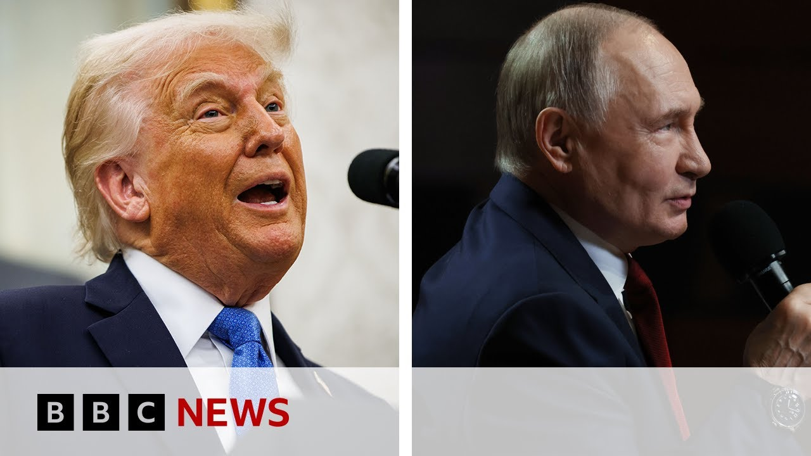

【克里姆林宫称俄乌和平备忘录无截止日期 | BBC新闻】
Summary: President Putin's spokesman says no deadline exists for drafting a Ukraine conflict peace memorandum, emphasizing complex details and no set meeting location, following Putin's call with Trump, who described it positively, while Putin stressed resolving the crisis's root causes.
摘要： 普京发言人表示，起草乌克兰冲突和平备忘录无截止日期，强调细节复杂且未设定会议地点；此前普京与特朗普通电话，后者称通话顺利，而普京强调需解决危机根源。

⏱️ Estimated Reading Time: 5 min
President Putin's spokesman has said there cannot be a deadline for drawing up a memorandum on how to end the conflict in Ukraine.
普京发言人表示，起草结束乌克兰冲突的备忘录不可能设定截止日期。
Dmitri Peskov told Russian media that while both Washington and Moscow want a quick end to the conflict, the devil is in the details.
佩斯科夫向俄媒表示，尽管华盛顿和莫斯科都希望冲突尽快结束，但细节决定成败。
He also said no location has yet been set for further meetings.
他还称，尚未确定后续会议的地点。
Well, his comments came after President Putin held a call with Donald Trump on Monday, which Mr. Trump has said had gone very well.
此番言论是在普京总统周一与特朗普通话后发表的，特朗普称通话非常顺利。
Mr. Putin instead said that the root of the crisis should be removed for the war to end.
普京则强调，必须消除危机根源才能结束战争。
Well, let's hear from our Russia editor at BBC monitoring, Vitali Chevchenko.
现在请听BBC监测俄罗斯编辑维塔利·切夫琴科的看法。
Vitali, from the Kremlin's perspective, what has this phone call changed?
维塔利，从克里姆林宫的角度看，这次通话改变了什么？
Well, I think uh when Donald Trump says that the phone call went very well, it's definitely true that it went well for Vladimir Putin because the US president well, he's not really changed much.
我认为当特朗普称通话非常顺利时，对普京而言确实如此，因为美国总统并未真正改变立场。
And that's precisely what the Kremlin wants to continue, the status quo.
而这正是克里姆林宫希望维持的现状。
In fact, the American president appears to have reversed his earlier insistence that a ceasefire must precede any talks.
事实上，美国总统似乎改变了先前坚持的"必须先停火再谈判"立场。
Now he's saying, "Okay, let's talk first and then think about a ceasefire."
现在他表示"先谈判再考虑停火"。
Also, he has ruled out fresh sanctions on Russia for now.
此外，他目前排除了对俄实施新制裁的可能。
Again, that's precisely what Vladimir Putin wants.
这再次符合普京的期望。
And he's still threatening to walk out of the whole process.
而他仍威胁要退出整个进程。
And I'm sure Vladimir Putin would not mind that either especially if that means no more American aid for Ukraine.
我相信普京也不会介意，尤其这意味着美国可能停止援乌。
So from the point of view of bringing peace closer conversation between the American and Russian presidents and the talks in Istanbul last Friday, I think they can be described as fruitless.
因此从促进和平角度看，美俄总统对话及上周五伊斯坦布尔会谈可谓毫无成果。
So, Vladimir Putin's not won over by Donald Trump's personality and his dealmaking persona.
可见特朗普的个人魅力和交易艺术并未打动普京。
Well, Vladimir Putin is playing his own game and looking at what he's been saying and doing in Ukraine.
普京正在按自己的规则行事，从其乌克兰言行可见一斑。
I think he's still determined to conquer Ukraine.
我认为他仍决心征服乌克兰。
Russian officials, they keep saying that they need what they call the root causes of the crisis to be addressed.
俄官员持续强调需解决所谓的"危机根源"。
And translated from Kremlin speak, this means the very reasons why Russia started this war in the first place, which is to stop Ukraine exercising its sovereignty and basically stop being an independent state.
用克里姆林宫的话说，就是要消除俄发动战争的根本原因——阻止乌克兰行使主权，使其无法成为独立国家。
And how strong is the war machine still in Moscow?
莫斯科的战争机器仍有多强大？
How long can factories keep on churning out what Russia needs and actually recruitment centers finding people to send to the front line?
工厂能持续生产军需品多久？征兵中心又能向前线输送多少兵员？
Well, it appears to be strong enough for this to continue.
目前看来其强度足以维持战争。
They're still turning out drones and artillery shells and missiles.
俄仍在生产无人机、炮弹和导弹。
The Russian army is held by its allies such as North Korea and Iran.
朝鲜和伊朗等盟友仍在支持俄军。
Oil prices are lower but not low enough to the Russian economy.
油价虽跌但未重创俄经济。
And also the Kremlin's war machine is to a large extent as strong as it's allowed to be.
且克里姆林宫的战争机器在现有条件下已足够强大。
And I'm sure Ukraine has reason to be disappointed with some of its allies in Europe as well.
我相信乌克兰也有理由对某些欧洲盟友感到失望。
You will remember of course that it's more than a week since the deadline they set for Russia to cease fire on the 12th of May last Monday.
须知5月12日设定的俄方停火最后期限已过一周多。
It's been and gone.
期限早已失效。
And despite threats to impose crippling sanctions on Russia, that's not happened yet.
尽管威胁对俄实施毁灭性制裁，但至今未兑现。
So Vladimir Putin can see that as an invitation to keep on attacking Ukraine.
因此普京可能将此视为继续攻乌的许可。
Empty threats.
空洞的威胁。
History shows that they don't really get us anywhere with Vladimir Putin.
历史表明这对普京根本无效。
I understand the EU may approve its next 17th package of sanctions on Russia.
据悉欧盟可能批准第17轮对俄制裁。
Let's see how effective they're going to be.
让我们拭目以待其效果。